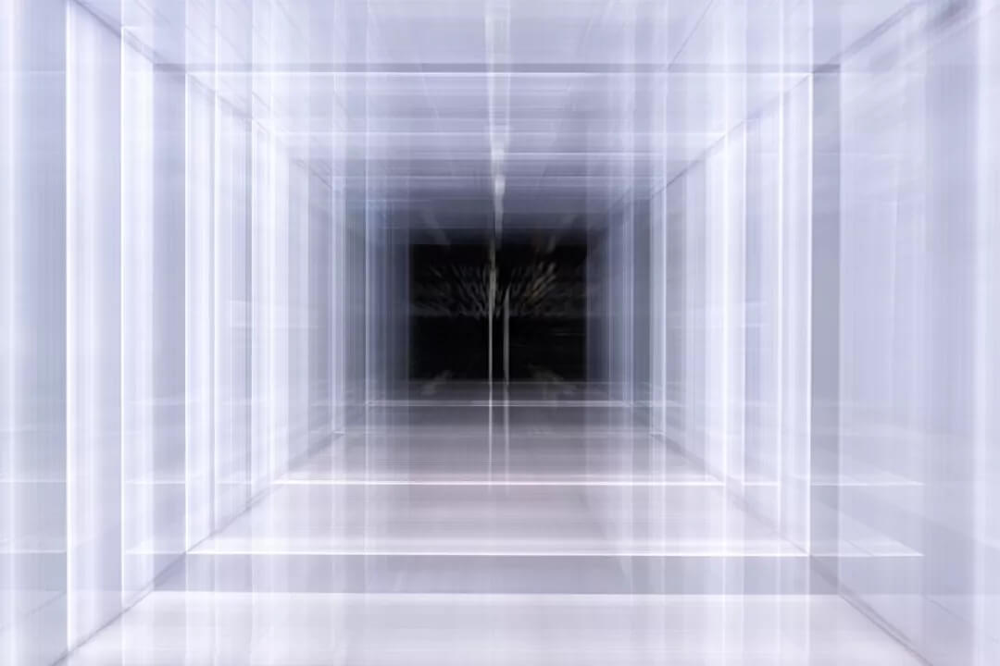

温馨提示：佛学入门系列课程由佛法人生弘法平台（www.xuefo.vip）根据历代祖师大德、当代法师的开示整理而成，为了避免在阅读时产生一些困惑、误解甚至怀疑和诽谤，强烈建议您从第一课开始按顺序学习。最后，愿大家都能成为一个正见的佛教徒，早证菩提。
一、对空性的误解
在世界上，大多数人都认为世间万物是实有存在的，是由最小单位的粒子组成粗大的物质。认为生活的一切都是实实在在的，若是都空了，那怎么组成这个粗大的器世界呢？由于存在着这样的担忧，因此必须要承认最小的物质单位。因此缘起性空或者现空无二等大乘中观理论，对于初学者来说确实存在着一定的挑战性。
不必说初学者，佛陀在世时很多小乘行人，虽然已经证得了四果阿罗汉，但一听到空性法门，也出现口吐鲜血而亡的。可见对于空性，若没有系统的深入闻思是很难理解的。鉴于此，末学以浅薄的慧力给大家作简单阐述。
其实很多人对于“空性”缺乏正确的理解，只是人云亦云，因此存在很多的误解。通常人们认为，所谓的“空”是指没有任何东西，譬如说空杯子指的是杯子里面没有装东西，空房子则是指房子里空无一人等等。
如果以这样的方式来理解空性，那么显现与空性就成了完全对立，也就是说，若是显现就不会空，若是空就不应该显现，如果是空，那么因果业报就成了虚无，如果因果成立，那么就不可能是空，而对于现空无二的说法，总会觉得矛盾重重。
二、什么是空性
“空性”这个名相，因为早期有许多梵文与藏文的英文翻译，都将空性译为“空无”、“无物”，所以，许多人进而将“空性”和“什么都没有”两者画上等号，但这与“空性”真正的含义相去甚远。
如果把“空”和“空性”分开来说，在梵文里面有两个字，第一个字“sunya”，第二个字“sunyata”，第一个字可以翻译成“空”，第二个字可以翻译成“空性”，这本来是两个很普通的名词，然而释迦牟尼佛所说的“空性”，并不是单单的一无所有，也并非凭空捏造，万法在显现的同时却是空而无自性、无实有的，佛陀发现了这一点，而且自己也证悟了这一实相，才把宇宙真相宣说给了我们这些众生。
“空性”是指不是实存的性质，也就是说没有真实存在，真实存在的这个性质被否定的状态，我们称之为“空”或者“空性”。事实上，万法在显现的同时即是空性的，因此空性也就是所有现象的本质，显现与空性不可分割相辅相承，因为是空性所以才会显现，也正因为显现所以也就证明了其自身并非实有的空性。
在佛教经典中，“空性”往往称为“不可思议”“无法言喻”“不可说”等，但也可直接翻译为“难以想象的”或“无以名状的”。因此，当说到空性时，意思并不是“什么都没有”，而是指一种能让任何事物显现、改变或消失的无限可能性。比如有些对佛陀的祈祷文说：“顶礼大力佛陀，能把整个宇宙放在一个原子上”。密勒日巴尊者与弟子惹琼巴也有类似的故事：
惹琼巴想要到印度去求学，密勒日巴告诉他没有必要，可是惹琼巴坚持要去印度。当惹琼巴回到西藏的时候，密勒日巴去见他，惹琼巴对于自己新学到的知识感到十分骄傲。在师徒二人走回密勒日巴洞穴的途中，突然落下一阵大冰雹，密勒日巴看到路边有个牦牛角，就进入牛角里，但牛角没有变大，密勒日巴也没有变小。密勒日巴在牛角里对着惹琼巴唱了一首歌，说牛角里的空间对任何了解无二的人还大得很！
这样的故事和祈祷文对于怀疑论者而言，简直就是宗教上可笑的符咒；而缺乏智慧的虔诚信徒，把它解释为“神一般的英雄，利用凡人所没有的超能力，表演了一些奇迹”。仔细研究分析这些祈祷文和歌集，就能知道，这并不是什么超能力，而是对于实相的某种了解或知识——他们了悟事物大小内外的不二性，也就是“空性”。

三、空而现的合理性
1. 缘起必然性空
龙树菩萨在《中观根本慧论》中也说道：“众因缘生法，我说即是空”，凡是因缘和合而产生的事物，都是没有自性的，缘聚则生、缘散则灭，因此可以说，这样的法就是空性的。
因缘所生指的是，世间上的一切有为法既非凭空而有，也不能单独存在，必须依靠种种因缘和合才能成立，一旦组成的因缘散失，事物本身也就化为乌有，因此“诸法因缘生，诸法因缘灭”的因果定律称之为缘起，而凡是缘起的法必然是空性的，也就是缘起性空。
《中论疏》云：“缘起者体性可起，待缘而起，故名缘起”。要想明白佛教的义理，就必须从缘起论开始。缘起性空也是宇宙人生本来的、必然的、普遍的法则，《中阿含经》云：“若此有则彼有，若此生则彼生，若此无则彼无，若此灭则彼灭”，这是对缘起的定义。
简单地说，就是世界上一切事物、现象的生起都是相对的，都是互相存在着关系和条件。如果没有这个关系和条件，任何事物和现象都无法生起。佛在《般若二万五千颂》中讲：“无论佛出世与否、说法与否，众生了达与否、证悟与否，法界本性都是二谛双运”。诸法本具的状态、本来面貌和佛出世不出世没有关系，和佛是否传法没有关系，和众生是否了达、是否证悟这样的道理都没有关系。无论佛出世或不出世，无论佛转法轮还是不转法轮，无论众生是否证悟了这个道理，诸法原本的状态，诸法的实相就是二谛双运、现空不二，它就是现而空、空而现这样的一个状态。它原本就是这样，永远都是这样，是不会改变的。
2. 性空才会缘起
如果想：既然一切万法都是空无实有，万一不空又会怎样呢？
答：若一切法不空，也就是说一切法是实有存在的，常有的，就会存在以下过失：
在这个世间，无论欲界、色界、无色界，或者西方、东方的任何一个国家，只要存在一个实有的法，这个法决定不可能有现和不现的部分。因为如果是“实有”的法，则必定是恒常不变、实有唯一的自性，如果存在现和不现的部分，那现的部分与不现的部分是不是一体？
比如一百个人同时看见一个瓶子，每个人都有不同的眼识产生，有些人看瓶口、有些人看瓶腹、有些人看瓶底。如果瓶子是实有一体的话，一百个人的眼识也应该变成一体了。若是这样谁也不会承认，因为每个人见到瓶子的眼识都是各自不相同的；如果现与不现的部分不是一体，那么也就失去了实有唯一的身份，因此，所谓的实一并不存在。
另外，从时间的角度来讲，如果有一个实有的法存在，那么过去、现在、未来都不应该发生任何变化，比如今天的瓶子、明天的瓶子和后天的瓶子都应该是一体的，这样一来，如同今天的瓶子那样，后天的瓶子也应如是，而不能发生任何变化。
或者，这个瓶子不应该出现东边存在西边不存在、西边存在东边不存在的情况，而应该是遍于一切空间、遍于一切时间，也不应该出现不同的人见到从而产生不同眼识等现象。由此将会导致世间中千差万别、各式各样的法自然消失，不会出现东方的瓶子、西方的瓶子，或者金瓶、银瓶等种种分类，全部成为如同虚空一般的一个整体。
但事实并非如此，一切时方中无量无边、各种各样、色彩斑斓、现量而现的这些景象，由于无一实有，所以才会显现千差万别的缘起法。比如饿鬼见到的是脓血，人却可以见为水；或者，在某人心目中不共戴天的仇敌，在另一个人的心目中则是至亲至爱的友人。
由此可以了知，真正的实相上并不存在一种恒常实有的法，也就是说，一切万法绝对是空性的，空性与显现是不可分割的。比如说，瓶子是空性就必定有显现，有显现的话，其本体也必定是空性的。
所谓“色即是空、空即是色”的道理也在于此。而二者存在的方式，既不是像黑白线搓在一起那样各自分开——空的时候不是现、现的时候不是空；也不是排除一者后另一者才出现——瓶子首先显现，被打烂后就变成空性了，或者对心的本性最初没有认识时不是空性，一旦认识之后才成为空性。而是，凡是空性决定为显现，凡是显现决定为空性。如《定解宝灯论》云：“显现周遍空性，空性周遍显现”。
四、万法无实故如梦
万法无一实有，才有了如此多姿多彩的显现，所以显现的一切终究是如幻如梦的，如《宝积经》云：“世尊！譬如有人在梦中享受很多的欲乐、嬉笑、游戏等等。当他醒来之后回忆的时候，就会发现梦中的境相丝毫得不到。为什么呢？因为正当那个人在梦中享受快乐的时候，尚且得不到什么，何况是醒来之后？如果有人说，我见到了什么、得到了什么等等，要知道，这些说法都是不合理的。同样，我们的眼、耳等诸根，就像梦中的事一样，只是妄现而已。像这样，一切万法都得不到实有的自性，或者说没有自体，是空性。以诸法不可得的缘故，对诸法的安立等等也不可说”。
譬喻中讲到，一个人在梦中，见到各种悦意的外境，并且缘着这些外境不断地分别、取着，玩得津津有味、不亦乐乎。但是，当他醒来回顾梦境的时候，就会知道，正在做梦的时候，一切外境、心识等都是虚假的，一点也得不到。既然正显现梦相的时候都得不到，那么，醒来的时候，梦相全部消失，就更是不可得了。
同样，现在的一切显现就像梦一样，只是因缘聚合而似现的一幕幕幻相。因此，你在面对这一切的根、境、识等现相的时候，如果说：“我见到、得到了什么”，其实只是疯人疯语。这些戏论法正在显现的时候，我们去观察，也得不到真实的自性。如果从迷梦中醒来，就更是得不到了。
诸法本来就是不存在、非实有的，只是我们凡夫众生无明愚痴的耽着才显现一切万法。这就像一个女人梦到自己生了孩子，她会想“我终于有孩子了”，当然这是妄想。后来她梦中的孩子死去了，女人又想：“我的孩子没了！”虽然以她这个“孩子没了”的分别念，会遣除生起“有孩子”的心想，但这个分别也是妄想，也即梦中分别“有孩子”的心是妄想，认为“没了孩子”的心同样是妄想。
同样，我们过去一直对于瓶子等法作实有想，这当然是妄想。后来我们对于瓶子等以中观正理抉择，认定了“瓶子等无有”，又开始作“无瓶子”等想。虽然这种想能对治作“有瓶子”等想，但这个想仍是妄想。所以，不论我们对于事物作实有想或无有想，都是妄念分别、执着而已，诸法本是空而无自性。
总的来说，我们凡夫众生太可怜了，见到事物显现，则耽着显现；说空性又耽着空性，总是堕入一边。因此，佛对于空性说了十六空、二十空；关于显现，佛又运用了很多比喻，如《般若经》云：“一切法如梦如幻，涅亦如梦如幻，较涅有胜法者，此亦如梦如幻”。《金刚经》也说：“一切有为法，如梦幻泡影，如露亦如电”。运用了阳焰、水月等幻化八喻，以此证成一切法虽显现却无有实质。
五、缘起性空的重要性与功德
般若空性是佛法的精华，若能证悟空性，也就见到了法界的实相，因此通达缘起性空之理是十分重要的。退一步说，即便没有精通空性，但如果能听到类似《心经》《金刚经》之类的佛经，或者宣讲甚深空性的中观论着等等，也有很大功德。
如果在此基础上能稍稍有些收获，亦即生起合理的怀疑。比如说，“诸法究竟是不是空性呢？也许是噢！”假使能有这样的疑问，那么从此以后，这个人的心里就播下了空性的种子，纵然即生不能成佛，但他流转轮回的时间也所剩不多了。圣天论师在《中观四百论》中也说道：“薄福于此法，都不生疑惑，若谁略生疑，亦能坏三有”。意思是说，福德浅薄者，于此烦恼的对治妙法——缘起性空，都不生合理的疑惑，若谁人略略对此法生疑，也能坏灭三有轮回。
关于这一点，在佛经当中还有一个比喻：一个人在辽阔的原始森林当中迷了路，他焦急而又迷茫地走了很久，最后终于遇到了放牧的牧童。这就说明他已经接近森林的边缘，很快就要走出去了。为什么呢？因为牧童们不可能到森林深处去放牧，而只会在森林边缘一带活动。
佛继续说道：同样，无始以来，我们在轮回当中经历了无数次生生死死，恐怖漫长的轮回就像茫茫无际的森林，而我们就如同在轮回密林中徘徊了很久的迷路人，现在终于听到了空性的法门，虽然尚未证悟空性，甚至对空性的了解也不够深入，但我们却已经踏上了脱离轮回的征程。这就说明，凡是听到般若波罗蜜多、凡是听到空性的人，纵然没有获得解脱，但也即将走到轮回的边界，很快就能从轮回中得到解脱。
当然，如果没有证悟空性，即使有了出离心与世俗菩提心，也不能彻底解决最后的问题。什么是最后的问题呢？就是从根本上断除所有的贪嗔痴烦恼与无明我执。也就是说，所有的问题，最后都必须以证悟空性的智慧来解决。仅仅具备出离心与菩提心，仍然不能获得最终的解脱。
身为凡夫，证悟空性是非常难的，但能相似地理解也会减少很多烦恼，在日常生活中也很实用。只要慢慢熏习，就不会去执着今世、轮回、三界等。最终解脱生死轮回，达到涅盘彼岸。